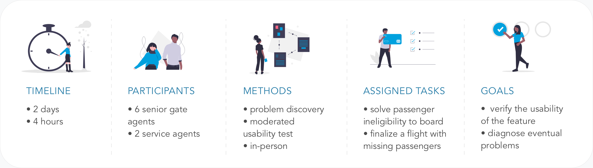

Unexpected events
Budget cut
While ready to iterate on the prototypes created during the design sprint, the project got impacted by some budget decisions and its scope had to be reduced. I was now only allowed to work on improving the flight details page.
Idea
After passively accepting the situation at first, I discussed with the information analyst and together we came up with an intermediary solution that, for a small increment in the job size, would still bring a lot of user-business value.
Together we presented our idea to the PO, who gave us the go-ahead.
Towards the new MVP
Prototype & usability tests
In collaboration with the information and business analyst, I came up with a prototype and organized a usability test with the gate agents, focusing on the 2 most difficult tasks. The test-iteration cycle lasted 2 weeks.

Final design
I tailored the process to the different phases of the boarding, with actionable information to empower ground staff in helping the passengers.
Phases
The process is now split in 3 phases where only the relevant data is displayed, to avoid information overload and speeding up the page loading time.
Smart passenger information
The information adapts to the operational needs: during the boarding, only the list of not boarded passengers and the notification feature are displayed, before the boarding closes, the missing passengers and their specific information are retrieved.